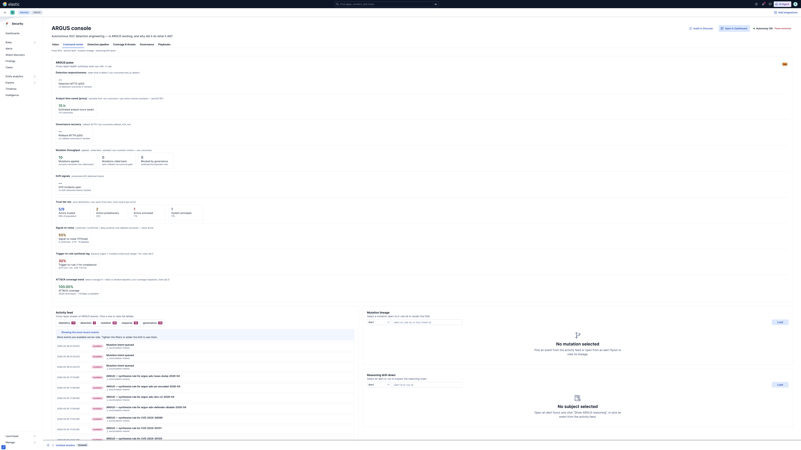

AutoDEX — Autonomous Detection Engineering
A self-governing detection engineer that reads CVEs and SOC telemetry, drafts new detections, validates them against historical data, ships them through a trust-tier-gated apply path, and rolls them back when they go bad — all without an analyst in the steady-state loop. AutoDEX is built on the Elastic Stack as a Kibana plugin extension, a workflow fleet, and a set of reusable @kbn/argus-* packages.
What is it
A self-driving detection engineer.
Eight subsystems wired into a Sense → Hypothesize → Validate → Act → Govern loop on top of native Elastic Stack primitives — Workflows engine, Saved Objects, Detection Engine, AI Assistant.
Why now
Mythos-class adversaries.
Frontier-capability attackers compress dwell-to-detection, generate behavioural variants faster than humans can author rules, and bring agentic reasoning to the attack loop. Manual detection engineering can't scale to that.
Today's posture
Operational on real data.
Live Kibana 9.5.0 cluster runs the full pipeline. Synthesis driver scheduled every 5 min; coverage snapshotter every 1h; trust-tier assessor + drift monitor + watchdog all firing. KPI tiles render real cluster aggregates, not stubs.
Why it matters — the four adversary pressures
The threat model AutoDEX is sized against is the Mythos-class adversary: an attacker with the capabilities a frontier-LLM-equipped red team can field today.
| Pressure | What it does to a SOC | How AutoDEX absorbs it |
|---|---|---|
| P1 — Dwell compression | Time-from-signal-to-detection collapses to seconds. Manual rule authoring stops fitting in the kill-chain window. | Synthesis driver turns a CVE advisory into a draft detection in ≤1 min (vision §4.1, p50 1.7 min today, target sub-minute). |
| P2 — Behavioural variant explosion | One TTP becomes hundreds of polymorphic variants. Static rule sets miss them. | LLM-driven variant generator + Pareto frontier selector ensures each draft rule covers a span of variants, validated by the eval suite before apply. |
| P3 — Agentic reasoning in the attack loop | Attackers run reasoning chains; they probe, iterate, adapt. Single-shot detections become brittle. | Reasoning-trace governance and reasoning eval reconciler grade every autonomous decision and quarantine actors whose reasoning quality drops (R10 watchdog). |
| P4 — Capability asymmetry | Defenders fall behind because attackers have more compute, more data, more iterations. | Trust-tier policy gate concentrates analyst attention on edge-case decisions while routine work flows autonomously, multiplying effective coverage. |
Where we stand today
Two independent measures verify AutoDEX is operational:
Vision-doc conformance — 38 / 38 sub-requirements
| Section | Conformant | Partial | Missing |
|---|---|---|---|
| §1 — 8 vision subsystems (38 sub-requirements) | 38 | 0 | 0 |
| §2 — 5 chat-skill epics (17090–17094) | 5 | 0 | 0 |
| §3 — 4 "sort-out" gaps | 4 | 0 | 0 |
| §4 — 4 success-metric measurability | 4 | 0 | 0 |
| §5 — ARGUS Benchmark (20 criteria) | 20 | 0 | 0 |
| §6 — HITL contract (4 clauses) | 4 | 0 | 0 |
Source: soc-simulation/docs/autodex/conformance-matrix.md — every requirement mapped to producer code, unit tests, and a live data path.
ARGUS benchmark — 95 / 100 (Autonomous tier)
The benchmark scores AutoDEX across 20 live-cluster criteria in five dimensions. The cluster scored 95/100, Autonomous tier on 2026-05-06.
D1 — Detection
30 / 30
Synthesis output, ECS/index validity, MITRE coverage, gate pass rate, autonomous applies.
D2 — Governance
20 / 25
Kill-switch wired, backtester referenced, declines logged, registry-owned artifacts. -5 because the rollback exerciser hasn't run since the last reseed.
D3 — Recovery
25 / 25
Disable/tune intents, rollback MTTR populated, dead-letter recovery, actor trust tiers.
D4 — Coverage
15 / 15
Coverage gaps tracked, auto-authored rules from advisories, enabler decisions issued.
D5 — Reasoning
10 / 10
1434 traces / 426 decisions, decision-graph edges populated, watchdog heartbeats current.
Total
95 / 100
Autonomous tier — the highest the benchmark defines.
Live KPIs — the Governance Pulse panel
The Pulse panel surfaces every vision-doc success metric as a live tile. The figures below were captured from a real Kibana 9.5.0 cluster on 2026-05-06; they are aggregations over now-24h, not synthetic placeholders.
Vision-doc-mandated KPIs
Source:
.soc-outcomes.verdictSource:
.soc-mutation-intents.synthesis_lag_msSource:
.soc-coverage-snapshotsOperational KPIs (continued in Pulse panel)
Live screenshot
Captured from http://localhost:15601/app/security/argus with the live badge active (the React hook reached status: 'success' on a real network response):

How to verify there are no stubs. The badge in the top-right of the panel reads live only when the React Query hook reaches status === 'success' on a real fetch. The demo-mode placeholder set is hard-coded behind an explicit demoMode prop that production never sets. Numbers above are computed from filter aggregations against .soc-outcomes, .soc-mutation-intents, and .soc-coverage-snapshots — see demo-evidence/pulse-payload.json for the raw response.
The autonomous loop — five layers
Every AutoDEX module belongs to exactly one layer. The contract between layers is documents in named .soc-* indices — never an in-process call. This means each layer can be replaced, scaled, or audited independently.
Sense
CVE feeds, alerts, fleet data. Producers: KEV ingest, intel adapters, coverage snapshotter, alert sweeper.
Hypothesize
Turn signals into draft detections. Producers: synthesis driver, exploit-to-detection, coverage gap analyzer.
Validate
Backtest, replay, eval. Gatekeepers: rule backtester, regression gate, shadow executor, trust gate, eval suites.
Act
Apply mutations. Operators: autonomous applier, recommendation applier, recovery, response, containment.
Govern
Audit, drift, kill-switch. Watchers: trust-tier assessor, drift monitor, reasoning watchdog, kill-switch, Pulse, shift handover.
Why this shape works
- No invisible coupling. Layers communicate via documents in
.soc-*indices. You can audit every hand-off in Discover. - Pure-logic primitives. Each layer has a TS pure function (
buildMutationIntent,evaluateRuleTuning,evaluatePrebuiltLifecycle, …) covered by unit tests, plus a workflow that wraps it for the live cluster. - Reversibility. Every L4 apply is mirrored by an L5 rollback path. The autonomous applier always snapshots before mutating; the recovery workflow restores on regression.
- Trust scaling. Producers carry an
actor_id; the trust-tier assessor scores actors over a 30-day window; the trust gate consumes that tier to decide whether L4 applies are auto, shadow, or manual.
Module reference — 14 packages
Each AutoDEX package is a self-contained module with a focused purpose and an explicit public entry point. Owner is @elastic/security-detection-engine across the board.
Layer 2 — Hypothesize: turning signals into draft detections
@kbn/argus-exploit-to-detection
The synthesis core. synthesizeOne() takes a structured advisory + context and returns a MutationIntent draft rule with a Pareto-frontier-selected candidate, LLM-generated variants, and an audit-trail block. Powered by @kbn/argus-inference-variant-provider for variant generation and @kbn/argus-tool-manifest for capability discovery.
@kbn/argus-inference-variant-provider
LLM-backed generator that emits behavioural variants for a given technique. Returns a Pareto frontier of (precision, generality, novelty) candidates. Producers in test mode use a deterministic stub; production wires the inference to the Kibana inference plugin.
@kbn/argus-kev-ingest
CISA Known Exploited Vulnerabilities adapter. Fetches the upstream JSON feed, normalises every entry into the canonical advisory shape, and writes idempotent rows into .soc-cve-advisories. Triggered hourly by soc-kev-ingest + soc-argus-intel-adapter-kev.
@kbn/argus-exploit-probability
Computes the per-CVE mythos_signal — a bounded [0,1] composite of EPSS, KEV freshness, social/dark-web chatter, and SDE telemetry. Consumed by the synthesis driver to prioritise advisories.
Layer 3 — Validate: gates that protect production
@kbn/argus-backtest
Replays a draft rule against historical events and emits a verdict (noise_cannon, healthy, under_baseline, insufficient_data) plus the alert volume distribution. Used by soc-rule-backtester and the shadow executor before any auto-apply.
@kbn/argus-trust-policy
Per-actor trust-tier assignment (frontier / trusted / probationary / quarantined) over a 30-day rolling window. Inputs: eval pass rate, reasoning-trace quality, rejection count, rollback count. Trust gate consumes this to decide whether an actor's draft is auto-apply, shadow, or pending-review.
@kbn/argus-tool-manifest
Capability registry — what tools each actor (workflow, skill, agent) is allowed to use, plus the per-tool health spec used by evaluateSkillHealth. The B9 self-adjusting-skills loop reads this and emits demote / reprompt / freeze recommendations.
@kbn/evals-suite-argus-detection
The detection eval vertical (M2.1). Playwright-driven evaluator that ingests a corpus of labelled events, runs each candidate rule against them, and emits an eval verdict (precision, recall, gate_decision) into .soc-argus-eval-runs. Required pass-gate before soc-detection-eval reconciler will mark a draft auto_apply_ready.
@kbn/evals-suite-argus-reasoning
Reasoning-trace eval suite. Reads .soc-reasoning-trace spans and grades each decision across calibration, faithfulness, cost-vs-stakes, hallucination, factuality. The reasoning eval reconciler turns failures into trust-tier downgrades.
Layer 4 / 5 — Act + Govern
@kbn/argus-reasoning-traces
Spec + helpers for the OTLP-shaped .soc-reasoning-trace spine. Every autonomous decision (synthesis, eval, gate, apply, rollback) emits one trace; the rest of AutoDEX stitches lineage through the argus.decision.* attributes.
Console — the human surface
@kbn/argus-console-common
Pure-TS contracts shared between the React panel and the server route: GovernancePulse, ArgusMutationsResponse, ArgusAutonomyResponse, plus the builders that turn raw ES aggregations into UI-shaped payloads. Isomorphic — no Kibana imports — so server route and tests don't need a browser harness.
@kbn/argus-console
The React UI. Pulse panel (KPIs), Inbox panel (mutation queue), Activity feed, Mutation lineage, Reasoning drilldown, Decision graph, Coverage heatmap + gaps, Calibre queue, Autonomy decisions, Playbooks. Powered by reusable useArgusQuery hooks with overlap-protected polling.
Interop — MCP + A2A servers
@kbn/argus-mcp-server
Model Context Protocol server that exposes AutoDEX tools (advisory search, mutation submit, trust-tier query) to external assistants. Lets a Cursor / Claude session interact with the live cluster through a typed contract.
@kbn/argus-a2a-server
Agent-to-Agent server. Exposes AutoDEX as a peer in the broader autonomous-agent fleet — capabilities discovery + structured task delegation.
Workflow catalogue — 65 canonical workflows
Workflows are the cluster-side cron of AutoDEX. Each is registered as a Kibana saved object via workflows/_registry.json, scoped to a small set of connectors, and tagged with an automation level (fully_auto, semi_auto, human_in_the_loop). The full registry is in demo-evidence/workflow-registry.json; below is the operational subset grouped by job.
L1 — Sense (10 workflows)
| Workflow | Purpose | Cadence |
|---|---|---|
soc-kev-ingest | CISA KEV live feed orchestrator | 30m |
soc-argus-intel-adapter-kev | KEV → .soc-intel-feed exploit_availability rows (B2) | 30m |
soc-argus-intel-adapter-generic | Demo-grade intel-feed seed | 1h |
soc-argus-intel-adapter-analytics | Analytics-cluster CTI enrichment ETL | 24h |
soc-argus-intel-mythos-aggregator | Per-CVE bounded mythos_signal | 30m |
soc-detection-corpus-sync | Hourly sync of enabled rules → .soc-detection-corpus | 1h |
soc-argus-coverage-snapshotter | ATT&CK coverage rollup → .soc-coverage-snapshots (vision §4.2) | 1h |
soc-argus-coverage-native | Detection Engine coverage diffs | 1h |
soc-alert-sweeper | Open-alert sweep → triage + tiered response | continuous |
soc-argus-de-health | Detection Engine health + per-rule execution metrics | 5m |
L2 — Hypothesize (8 workflows)
| Workflow | Purpose | Cadence |
|---|---|---|
soc-argus-synthesis-driver | Per-advisory synthesis run; calls the registered security.argusSynthesizeAdvisory step | 5m |
soc-argus-exploit-to-detection | Reconciles advisory state with eval verdicts | 5m |
soc-deteng | Detection-engineering loop — proposes rule patches / new rules with evidence | 30m |
soc-gap-analyzer | Coverage-gap analysis + capability_gap recommendations | 1h |
soc-proactive-hunter | Multi-source proactive hunt → candidate detections | 1h |
soc-argus-alert-to-hypothesis | Alerts without CVE coverage → advisory + synthesis trigger | 15m |
soc-argus-coverage-initializer | Discover Fleet integrations; propose missing prebuilt rules | 24h |
soc-argus-ml-anomaly-bridge | ML anomalies → .soc-hunt-findings hypotheses | 10m |
L3 — Validate (6 workflows)
| Workflow | Purpose | Cadence |
|---|---|---|
soc-rule-backtester | Replay drafts against historic alert data | continuous |
soc-argus-shadow-executor | Dry-run all auto_apply_ready drafts; downgrade noise cannons | 30m |
soc-regression-gate | Replay regression dataset against any proposed change | continuous |
soc-detection-eval | Reads .soc-argus-eval-runs; feeds verdicts into the regression gate | 15m |
soc-argus-trust-gate | Per-recommendation trust-tier check before auto-apply | 5m |
soc-argus-fp-baseline-roller | Per-rule FP baseline → .soc-rule-fp-baseline | 24h |
L4 — Act (8 workflows)
| Workflow | Purpose | Cadence |
|---|---|---|
soc-autonomous-applier | Governance-gated applier (ownership, budget, cooldown, kill-switch, snapshot-before-mutate) | 5m |
soc-recommendation-applier | Operator-approved deterministic patches → DE | continuous |
soc-recovery | Restore snapshots on kill-switch / regression failure | on-event |
soc-response | Containment playbook (host isolate, process kill, user notify) | on-event |
soc-argus-containment | Governance-gated Defend response (kill-switch + trust + budget + cooldown) | on-event |
soc-canary-graduation | Canary-mode rule graduation + flag-for-rollback | 4h |
soc-argus-rule-health-monitor | High-volume rule monitor → autonomy decisions | 5m |
soc-argus-case-lifecycle | Find-or-create investigation case + alert attach | on-event |
L5 — Govern (16 workflows)
| Workflow | Purpose | Cadence |
|---|---|---|
soc-watchdog | Trip kill-switch on budget / regression / loop thresholds | 1m |
soc-argus-trust-tier-assessor | Per-actor tier (frontier / trusted / probationary / quarantined) | 1h |
soc-argus-reasoning-watchdog | Short-window confidence dropout watchdog | 5m |
soc-argus-drift-monitor | EMA-baseline rule eval drift + actor trajectory | 1h |
soc-argus-self-healer | workflows.failed subscriber → retry / dead-letter / alert | on-event |
soc-skill-self-adjust | B9 evaluateSkillHealth verdict → reprompt / demote / freeze (self-tuning skills) | 1h |
soc-skill-metrics-roller | Per-skill rollup → .soc-skill-metrics | 1h |
soc-shift-handover | 8h operator-facing summary | 8h |
soc-forensic-summarizer | Closed-case immutable summaries → .soc-forensic-summary | 15m |
soc-incident-reverse-intel | B10 incident TTPs → .soc-intel-feed reverse loop | 1h |
soc-argus-redundancy-scanner | Consolidation intents for overlapping rules | 24h |
soc-recommendation-lifecycle | Auto-close stale recommendations > 7d | 24h |
soc-argus-dac-export | B4 detection-as-code export queue | 1h |
soc-argus-health-aggregator | Subsystem signals → single .soc-argus-health doc | 5m |
soc-workflow-liveness-watchdog | Heartbeat freshness across the workflow fleet | 10m |
soc-pipeline-run-telemetry | Workflow-fleet cadence + success / failure counts | 5m |
Adversary simulation + demos (5 workflows)
| Workflow | Purpose | Trigger |
|---|---|---|
soc-argus-arm-mythos-preset | Manual-only arming switch for the Mythos-class adversary preset | operator |
soc-argus-frontier-simulator | Variant-bank-driven labelled events into the eval corpus (M2.4) | 30m while armed |
soc-caldera-dispatcher | Dispatch Caldera operations against the lab fleet | operator |
soc-caldera-poller | Poll Caldera for op status → evolution log | 5m |
soc-demo-1-runner | Demo Scenario 1 — Same-day CVE → detection | operator |
Chat surface — Security AI Assistant skills
AutoDEX integrates with the default Elastic Security AI Assistant via portable skills rather than custom Agent Builder agents. Each skill is a knowledge module the assistant can load on demand; the same toolkit is available from the Cursor / Claude integration via the MCP server.
| Skill | Trigger | What it knows |
|---|---|---|
soc-rule-synthesis | "draft a detection for CVE-…", "build a rule for technique T1…" | Synthesis primitive (synthesizeOne) + advisory schema + Pareto candidate selection. |
soc-mutation-planning | "plan a mutation for rule R…", "what should we change about this rule?" | Mutation intent shape + governance gate matrix + trust-tier consequences. |
(B7 trigger) soc-argus-rule-tuning | "tune this noisy rule" | evaluateRuleTuning verdict matrix; mirrors logic in kbn-argus-trust-policy. |
(B8 trigger) soc-argus-prebuilt-lifecycle | "manage this prebuilt rule's lifecycle" | evaluatePrebuiltLifecycle matrix. |
(B9 trigger) soc-argus-skill-health | self-invoked by soc-skill-self-adjust | evaluateSkillHealth verdict matrix → recommended_actions. |
Index map — the .soc-* contract
Every layer hand-off in AutoDEX is a document in a named .soc-* index. The full schema lives in soc-simulation/docs/autodex/schemas/; below is the map of which index is owned by which layer and which subsystem reads/writes it.
All AutoDEX writes go through write-time contract checks (checkContract() using zod schemas) so a producer regression cannot poison consumers. The synthesis driver alone has 33 contract tests covering positive + negative drift modes.
Live evidence bundle
Everything in soc-simulation/docs/autodex/demo-evidence/ was captured from the live cluster on 2026-05-06. Re-running the validation produces fresh artifacts; see the README in that directory for the exact reproduce-locally commands.
| File | Proves |
|---|---|
| benchmark-20260506T013826Z.json | Full 20-criteria scorecard, 95/100, Autonomous tier |
| pulse-payload.json | Live response from /internal/security_solution/argus/governance_pulse — every KPI section populated |
| pulse-panel-live-final.png | Browser screenshot with the live badge and three new vision-doc tiles rendered |
| coverage-route.json | Live response from /internal/security_solution/argus/coverage — backs the coverage trend tile |
| coverage-snapshots-history.json | The .soc-coverage-snapshots rolling history with two distinct snapshots → trend signal verifiable |
| sample-mutation-intents.json | Three real .soc-mutation-intents with synthesis_lag_ms populated |
| sample-advisories.json | Three real .soc-cve-advisories with ingested_at — the lower bound for §4.1 lag |
| sample-outcomes.json | Three real .soc-outcomes with verdict labels — backs §1.6.8 signal-to-noise |
| workflow-registry.json | The .soc-workflow-registry index — 65 workflows registered + Kibana saved-object IDs resolved |
| reasoning-trace-count.json | Heartbeat — .soc-reasoning-trace rows in the last 30 min, confirms audit spine is alive |
| README.md | Per-artifact provenance + reproduce-locally commands |
{kind=link}
ARGUS benchmark scorecard — 95 / 100 (live)
The benchmark runs soc-simulation/scripts/run_argus_benchmark.sh against a live cluster and grades AutoDEX along 20 criteria across five dimensions. Each row's reason is a real document count or aggregation — not a mock.
D1 — Detection (30 / 30)
mitre_technique / draft_rule.mitre5/5gate_decision=pass + 0 projection_safe in .soc-backtests10/10D2 — Governance (20 / 25)
.soc-kill-switch has 1 doc with autonomy_enabled)5/5.soc-artifact-registry5/5D3 — Recovery (25 / 25)
rollback_mttr_ms5/5D4 — Coverage (15 / 15)
D5 — Reasoning (10 / 10)
Operator quickstart — 5-minute demo
The end-to-end demo path on a freshly bootstrapped worktree:
# 1. Bring up the cluster + Kibana (one-time)
yarn kbn bootstrap
docker compose -f soc-simulation/docker-compose.yml up -d soc-elasticsearch
yarn start --no-base-path # in another terminal
# 2. Seed the demo data + register workflows
soc-simulation/scripts/seed_argus_demo.sh
soc-simulation/scripts/reseed_workflow_registry.sh
soc-simulation/scripts/resolve_workflow_ids.sh
# 3. Open the console
open http://localhost:15601/app/security/argus
# 4. Run the benchmark live
soc-simulation/scripts/run_argus_benchmark.sh --score-only
# 5. Refresh evidence (any time)
curl -sS -u elastic:changeme \
-H 'kbn-xsrf:true' -H 'Elastic-Api-Version: 1' \
http://localhost:15601/internal/security_solution/argus/governance_pulse \
-o soc-simulation/docs/autodex/demo-evidence/pulse-payload.jsonFor the full 20-minute demo (Mythos preset, drift, trust tiers, kill-switch), see soc-simulation/docs/argus/demo-runbook.md.
Glossary
- AutoDEX
- Autonomous Detection Engineering — the productionised name. ARGUS was the hackathon prototype; on-disk artifacts (
kbn-argus-*,soc-argus-*,.soc-*,argus-*doc tree) keep the legacy name until a coordinated rename. - Mutation intent
- A draft change to a detection: rule create, rule patch, rule disable, exception add. Lives in
.soc-mutation-intents; flows through the validate → trust-gate → apply pipeline. - Mythos-class adversary
- Frontier-LLM-equipped attacker (Caldera level-6 profile). Manual-armed only; the simulator and Caldera profile refuse to run unless arming is active and within window.
- Trust tier
- Per-actor (workflow, skill, agent) score over 30 days: frontier / trusted / probationary / quarantined. The trust gate routes auto-apply requests based on tier.
- HITL
- Human-in-the-loop. AutoDEX's HITL contract has 4 clauses: kill-switch is operator-only, manual arm of Mythos preset, operator approval for door-class=one-way mutations, audit-trail review SLA.
- Pareto frontier
- The synthesis driver picks variants from the (precision, generality, novelty) Pareto frontier — no candidate dominates the others.
- Synthesis lag
mutation_intent.@timestamp − advisory.ingested_at. Vision §4.1 target: < 1 min.- Reasoning trace
- OTLP-shaped span emitted on every autonomous decision. Audit spine; the reasoning eval suite grades each one.
- B-numbers
- The vision-doc work breakdown: B1 synthesis driver, B2 production CTI, B3 FP baseline, B4 DaC export, B7 rule tuning, B8 prebuilt lifecycle, B9 self-adjusting skills, B10 incident reverse-intel, B11 MTTD, B12 hours-saved, B13 telemetry-grounded variants, B16 schema convergence, B17 coverage-gap → Path A bridge.